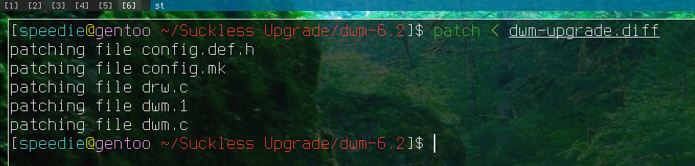

In this guide I tell you how to upgrade Suckless software like dwm, st, dmenu, surf and more to a newer version without abandoning your fork and starting from scratch.
I'm not sure if I'm the only one who's used this method but it works great. It even works if you have 30+ patches like I had with my build of dwm. I was still able to easily upgrade from 6.2 to 6.3 in around 10 minutes.
First, create a directory anywhere on your system. I created mine in my home directory. Then open a web browser and navigate over to the suckless website.
Then select the software you're using. For this guide I will be using dwm. Now copy the link to the latest tarball and open up a terminal and change directory into the new folder.
Download the latest tarball using the wget command. Now download the tarball for the release your build of dwm is on. You can see this by looking at config.mk. It has a version variable at the top which is the version of the software you're on.
Now, you can unpack both of these tarballs using tar -xpvf tarball.
If you did it correctly you should have two folders with two different versions.
In my case, there's dwm-6.2 and dwm-6.3. Now, what we're going to do is create a patch that we can apply to our riced fork of (in this case) dwm.
In this case you can do this by running diff -up dwm-6.2 dwm-6.3 > dwm-patch.diff. Obviously change the names if yours are different. If we run this command we should get a patch. We can apply this to any dwm build which is exactly what we're going to do.
Copy the .diff to your dwm/st/whatever source code folder and then change directory into it.
Now, run patch < patch1.diff where patch1.diff is your patch. If you're on a relatively clean build, it should apply just fine. If it doesn't, you'll want to manually add in the chunks. If you're not familiar with patching then it may be slightly difficult for you. What you'll want to do is look at the .rej files and copy them into the regular files. Once you're sure everything looks good and it patched properly then you can go ahead and make clean install as root.

As you can see, it compiled just fine and if you look at the config.mk you'll see that we've suck-less-ly upgraded our dwm version from 6.2 to 6.3. Again, this can be applied to any of their software.
Hope this guide helped you out. If it did, feel free to share it around or donate some Monero.
Have a great day suckless chad!